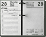

|  |
Day 1 – Wednesday 27 April
07.00 – The team assemble outside the British Museum, ready to tackle their final project as BBC1’s Ground Force…
08.00 – A plethora of deliveries arrives – tools, vehicles, materials, plants...
09.00 – Myles Wickstead (Head of Secretariat for the Commission for Africa) and Gus Casely-Hayford (originator of Africa 05, Arts Council) arrive to wish the team good luck
10.00 – Charlie, Tommy and Kirsty tackle the strenuous and lengthy task of stripping all turf from the lawn
13.00 – The landscaping is underway…
14.00 – Tommy marks out the lines for the garden path
15.30 – The Museum’s Court restaurant delivers cakes which the team gratefully devour
16.00 – A JCB begins digging out the garden path
16.30 – Once a neat lawn, the space now resembles a building site
18.00 – The line up of lush plants that will transform the site allays a few fears
19.30 – The team pack up their tools, and survey progress so far…
Day 2 – Thursday 28 April
07.30 – Expert help arrives in the form of gardeners from The Eden Project and The
Horniman Museum. A dazzling array of tropical plants arrive fresh from The Eden Project in Cornwall
09.30 – The Museum’s African Galleries curator Chris Spring presents the team with some fascinating Mozambican sculptures – made from decommissioned weapons
10.00 – Construction of the stunning 8.5 meter(26ft), seventeen piece sculptural Baobab tree begins
11.30 – The garden is starting to look green. A lush banana grove set over the tropical centre starts to take shape.
12.30 – Zachary Parker and family from the Starlight Wish Foundation arrive. Zachary’s top wish was to meet the Ground Force team. The team are delighted to greet one of their most loyal fans.
14.00 – Algerian artist Rachid Koraïchi arrives with his piece: Seven Doors of Heaven
15.00 – Charlie climbs into the central water feature to prepare it for the arrival of Sokari Douglas Camp’s sculpture.
16.00 – A group of school children from south east London arrive to take part in in a drumming workshop run by The Oduduwa drummers
Day 3 – Friday 29 April
07.45 – Sokari Douglas Camp arrives with her stunning sculpture to take pride of place in the centre of the garden
11.00 – After much manoeuvring, the five 2.4 meter(8ft) tall figures are wired up ready for the water to flow
11.45 – Chris Spring supervises the delivery of Zimbabwean artist Adam Madebe’s Fallen Warrior sculpture
15.00 – West African artist El Anatsui’s sculpture Monument takes its place at the entrance to the garden
16.00 – The enormous task of laying the path is finally complete
17.00 – Ethically sourced wooden screens are being erected as quickly as they are created by Willy et al.
18.00 – The pressure’s on – there are still hundreds of plants to planted … will there be time before dark?
Day 4 – Saturday 30 April
12.00 – Guests begin to arrive… jaws drop as they take in the creation that has suddenly appeared in front of the Museum
12.30 – Museum Director, Neil McGregor, officially opens the garden
12.35 – Nigerian Drumming troupe Oduduwa Drummers make a surprise appearance and lead a vibrant procession through the newly finished garden
13.00 – The guests enjoy an African feast and soak up the atmosphere of one of Ground Force’s most ambitious and challenging projects ever…
|